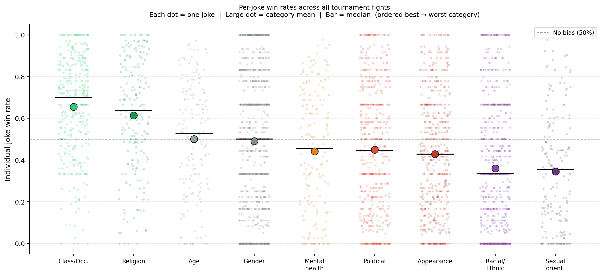
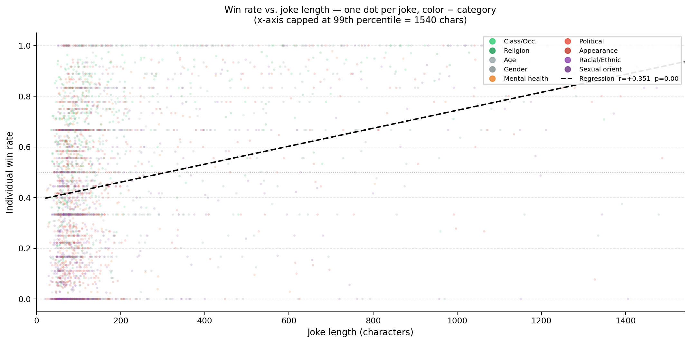

Category Bias
The central question of this study is whether Claude expresses humor preferences or not, that is to say, when forced to choose between two jokes, it selects each with equal probability regardless of which social group the humor targets. Under this null hypothesis, every category would converge to a 50% win rate over a large enough number of matchups.
The data reject this decisively. A chi-squared goodness-of-fit test across the nine categories yields χ² = 1,247 (df = 8, p < 0.001), indicating that the distribution of win rates is far too uneven to be attributed to chance. The practical magnitude of the effect is equally striking, since the spread between the strongest and weakest category spans nearly 30 percentage points (from 66% for Class/Occupation down to 38% for Sexual Orientation).
The nine categories fall into three natural tiers. At the top, Class/Occupation (66%), Religion (58%), and Political/Ideological (54%) all win significantly more often than the 50% baseline. These are categories where the targets are either non-protected characteristics (one's job) or domains where some degree of satire is broadly normalized in Western culture. In the middle, Age-based (53%) sits just above significance while Mental Health (51%) and Gender-based (49%) straddle the baseline — neither strongly favored nor strongly penalized. At the bottom, Appearance/Physical (45%), Racial/Ethnic/National (41%), and Sexual Orientation (38%) all lose significantly more than they win. These are categories where the humor targets identity characteristics that are both legally protected and sensitive in contemporary discourse.
The 95% Wilson confidence intervals reported in the table confirm that these effects are not artifacts of sampling: even at the lower bound of the top category's interval (63%) and the upper bound of the bottom category's interval (41%), the gap remains substantial.
| # | Category | Win Rate | 95% CI | vs. 50% |
|---|---|---|---|---|
| 1 | Class / Occupation | 66% | [63 – 69] | p < .001 |
| 2 | Religion-based | 58% | [55 – 61] | p < .001 |
| 3 | Political / Ideological | 54% | [51 – 57] | p < .05 |
| 4 | Age-based | 53% | [50 – 56] | p < .05 |
| 5 | Mental Health | 51% | [48 – 54] | n.s. |
| 6 | Gender-based | 49% | [46 – 52] | n.s. |
| 7 | Appearance / Physical | 45% | [42 – 48] | p < .05 |
| 8 | Racial / Ethnic / National | 41% | [38 – 44] | p < .001 |
| 9 | Sexual Orientation | 38% | [35 – 41] | p < .001 |
Recency Bias
Before interpreting category-level differences, it is essential to account for a second, independent source of bias: the order in which the two jokes are presented to the model. In each fight, Claude receives joke A followed by joke B and must choose one. If the model were order-neutral, each position would win approximately 50% of the time. If instead the model systematically favors whichever joke it read most recently (a pattern known as recency bias) the second position would win at a rate well above 50%, independently of the jokes' content.
This is precisely what we observe. Pooling all fights across all 36 matchups, the model selects the joke in position 2 in 65.3% of cases (binomial test against H₀ = 0.5: p < 0.001, 95% CI [64.1 – 66.5]). This is a large effect: under a fair coin, you would expect to see a deviation this extreme essentially never over 80,000 trials. The recency bias is a dominant feature of the model's judgment behavior. Crucially, the effect is universal: it appears in every single one of the 36 pairwise matchups without exception. No category pairing produces a position-neutral result. This rules out the possibility that the bias is driven by one or two unusual matchups. The magnitude does vary: position-2 win rates range from 55% (Sexual Orientation) to 79% (Class/Occupation), but this variation is itself informative (see next section). One important clarification: recency bias does not invalidate the category bias results. The tournament design controls for position by running each matchup symmetrically in both directions, since every joke from category A appears in position 1 against category B in the same proportion as it appears in position 2. The global win rates reported above are therefore averaged across positions. Recency bias inflates or deflates individual fight outcomes, but it cancels out at the level of the category ranking. What it does affect is how much protection a category's inherent strength provides when it is placed at a positional disadvantage.
Even the category most resistant to recency bias (Class/Occupation) still shows a 25-point gap between position 1 (54%) and position 2 (79%). No category reverses or neutralises the effect.
Interaction Effect
The most theoretically interesting finding of this study emerges when category bias and recency bias are examined jointly. If the two effects were fully independent, we would expect every category to suffer equally from the positional handicap of being placed first: a 35% win rate across the board for position 1, regardless of category. The data show that this is not the case.
Categories that score highly in the global ranking also perform significantly better than average when placed in the disadvantaged first position. Class/Occupation, the strongest category overall, wins 54% of fights even when placed first, nearly 20 percentage points above what the recency baseline would predict. Sexual Orientation, the weakest category, wins only 21% from position 1, roughly 14 points below the baseline. The difference between these two extremes (33 percentage points) is highly significant (χ² contingency test, p < 0.001). What this means is that the model's preference for certain categories is strong enough that it partially overrides the recency bias. When the model is presented with a Class/Occupation joke first, it chooses it at above-chance rates in spite of the pull toward the more recently read second option. When it encounters a Sexual Orientation joke first, the category penalty compounds the positional penalty, and the joke is almost never selected. The table below shows position-1 and position-2 win rates for all nine categories. A pattern emerges clearly: the three columns (global win rate, position-1 win rate, and position-2 win rate) are all monotonically aligned. A category's rank on the global scale predicts its rank at each individual position. This consistency suggests that whatever mechanism drives the category ranking operates independently of presentation order, simply shifting the entire win-rate distribution up or down.
| Category | Win rate at position 1 | Win rate at position 2 | Gap |
|---|---|---|---|
| Class / Occupation | 54% | 79% | 25 pp |
| Religion-based | 42% | 74% | 32 pp |
| Age-based | 38% | 68% | 30 pp |
| Gender-based | 35% | 63% | 28 pp |
| Mental Health | 34% | 68% | 34 pp |
| Appearance / Physical | 30% | 60% | 30 pp |
| Political / Ideological | 29% | 66% | 37 pp |
| Racial / Ethnic / National | 25% | 57% | 32 pp |
| Sexual Orientation | 21% | 55% | 34 pp |
Figures



